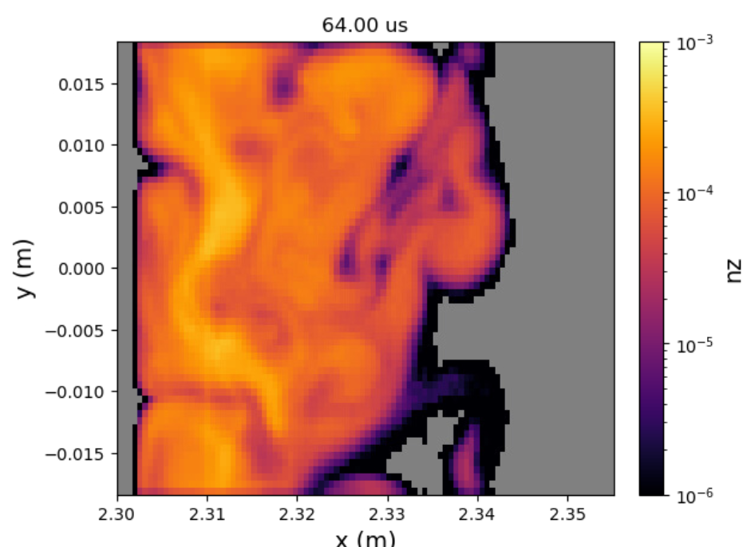

Flan: Turbulent Trace Impurity Transport
Flan follows trace amounts of impurities through turbulent plasmas. It's a Monte Carlo code that tracks each impurity ion's full gyro-orbit through a time-dependent background plasma, usually a turbulence simulation from Gkeyll, and records where the impurities go. The result is the impurity density, flow and charge state throughout the plasma, as they evolve in time with the turbulence.

What Flan does
Impurities, i.e., atoms other than the main plasma species, enter a fusion plasma from the walls and other plasma-facing components. Even in small amounts they can radiate away power and dilute the fuel, so where they go is important. In the scrape-off layer (SOL), the transport is dominated by turbulence, which existing impurity transport codes typically model with simple diffusion and pinch coefficients.
Flan instead follows the impurities through the turbulence itself. For a heavy impurity like tungsten, the gyroradius is comparable to the size of the turbulent fluctuations, so the usual guiding-center approximation breaks down. Flan makes no such approximation: every particle is pushed through the electric and magnetic fields with its full gyromotion resolved.
Flan is a trace impurity code. The impurities are assumed to be too few to change the background plasma, and they don't interact with each other. Each one is followed independently through the background, which is what lets the calculation be spread across many CPU cores, nodes and GPUs.
What it can simulate
- Impurity transport in turbulent plasmas. The main use is impurities in the SOL of a tokamak, in a time-dependent turbulent background from a Gkeyll simulation, e.g., tungsten in the DIII-D far-SOL. Flan works with Gkeyll's field-aligned, curvilinear coordinates.
- Many impurity species. Any impurity can be followed. With ionization/recombination on, OpenADAS data is used for H through Ne, Al, Si, Cl, Ar, Fe, Kr, Mo, Xe and W.
- Where impurities start. Particles can start at one location and time, over a range, or anywhere in the simulation, with a set temperature or the local ion temperature, and in any charge state, including as neutrals.
- Different boundaries. Each boundary can absorb particles, wrap them around (periodic), or send them back in from a random spot along it, as for particles entering the core.
- Textbook test cases. Built-in test backgrounds check that Flan reproduces gyration, the ExB, grad-B, polarization and curvature drifts, and the friction force from the collision model.
The output is a netCDF file with the impurity density, the average velocity (in both Cartesian and the simulation's coordinates), the average charge state and more, on the background's grid at every time frame.
Physics
- Full-orbit particle push with the energy-conserving Boris algorithm. The fields are interpolated in space and time to each particle's position. See Impurity Transport.
- Coulomb collisions with the background ions and electrons, using the Nanbu model, which is valid for any collisionality. See Collisions.
- Ionization and recombination from OpenADAS rate coefficients. See Ionization/Recombination.
Performance
Flan is written in C++ and built for large simulations, up to hundreds of millions of particles:
- OpenMP threads on each node, see OpenMP Layout.
- MPI across nodes, see MPI Parallelism.
- NVIDIA GPUs with CUDA, with the same physics as the CPU version. One build runs on either, chosen when the simulation starts.
Getting started
- Install Flan on your machine, as a CPU or GPU build.
- Set up and run a case. The ExB drift test there is a good first run.
- Choose your input options.
Site layout
| Section | What's there |
|---|---|
| Installation | Building Flan and its dependencies, on Linux and Perlmutter. |
| Running Flan | Setting up a case, the input file, running it and reading the output, plus job scripts for Perlmutter and Omega. |
| Input Options | Every input option, with its type, default and description. |
| Physics | How Flan models impurity transport, collisions and ionization/recombination. |
| Developer | How the code is organized (Code Structure), parallelized (MPI, OpenMP) and documented (API Reference), and how to contribute. |
| Publications/Presentations | Papers and talks that use Flan. |
Citing Flan
If you use Flan in your work, please cite:
S. A. Zamperini, T. N. Bernard, S. Andersen, A. C. D. Hoffmann, D. L. Rudakov, and T. Abrams, "Fully generalized, turbulent trace impurity transport with Gkeyll and Flan in the DIII-D far-SOL," Plasma Physics and Controlled Fusion 68, 075013 (2026). doi:10.1088/1361-6587/ae836b
@article{Zamperini2026,
author = {Zamperini, S. A. and Bernard, T. N. and Andersen, S. and
Hoffmann, A. C. D. and Rudakov, D. L. and Abrams, T.},
title = {Fully generalized, turbulent trace impurity transport with
{Gkeyll} and {Flan} in the {DIII-D} far-{SOL}},
journal = {Plasma Physics and Controlled Fusion},
volume = {68},
pages = {075013},
year = {2026},
doi = {10.1088/1361-6587/ae836b}
}
Contact
Flan is developed by Shawn Zamperini at General Atomics. For questions, problems or collaborations, contact Shawn at zamperinis@fusion.gat.com. The source code is on GitHub.
License
Flan is free for noncommercial use, such as research at universities, national
laboratories and other public research institutions, under the
PolyForm Noncommercial License 1.0.0
(see the LICENSE file). Commercial use requires a separate license. To
request one, contact Shawn Zamperini
(zamperinis@fusion.gat.com).
About the name
Flan is named after Shawn's dog, Flannery. It doesn't stand for anything.